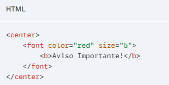
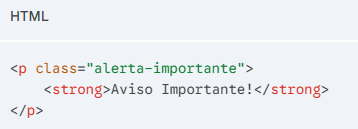
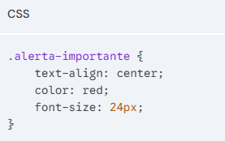

HTML é a linguagem base de toda a internet.
Ele não é uma linguagem de programação, mas sim uma linguagem de marcação usada para estruturar e dar significado ao conteúdo de uma página web (como definir o que é um título, um parágrafo, uma imagem ou um link).
"A separação entre estrutura e estilo é o pilar da web moderna." - Comunidade Web
A web mudou muito desde os seus primórdios.
A evolução foi como uma potência matemática: do HTML4 para o HTML5, a web evoluiu 100%.
O HTML4, lançado no final dos anos 90, era focado em colocar o conteúdo na tela a qualquer custo.Naquela época, os desenvolvedores usavam o próprio HTML para tentar deixar a página bonita.
O HTML5, que se tornou o padrão moderno, mudou esse jogo.
Ele introduziu a semântica (tags que explicam o que o conteúdo é, e não como ele se parece) e trouxe suporte nativo para áudio, vídeo e gráficos avançados, limpando muito o código.
Com a evolução para o HTML5, a comunidade de desenvolvimento web percebeu que misturar a estrutura da página com o seu design era uma péssima ideia.
Isso deixava os sites pesados, difíceis de atualizar e inacessíveis para leitores de tela.
Assim, as tags que serviam apenas para "enfeitar" a página foram declaradas obsoletas (descontinuadas).
Tags obsoletas são elementos do código HTML que não são mais recomendados para uso na criação de sites modernos.
Embora os navegadores atuais (como Chrome, Edge ou Safari) ainda consigam "ler" e exibir essas tags para que sites muito antigos não quebrem, você nunca deve usá-las em um projeto novo.
O grande erro das tags obsoletas é que elas ditavam a aparência visual diretamente no código estrutural.
Se você quisesse mudar a cor de todos os títulos de um site com 100 páginas, teria que abrir arquivo por arquivo e mudar a tag de cor um por um.
Hoje, a regra de ouro do desenvolvimento web é a separação de responsabilidades. O HTML cuida apenas da estrutura, e o CSS (Cascading Style Sheets) cuida de 100% da aparência (cores, tamanhos, posicionamento).
Aqui estão alguns dos exemplos mais clássicos de tags que você deve evitar:
Por que morreu: Puramente visual. Hoje, usamos as propriedades color, font-size e font-family no CSS.
Por que morreu: O alinhamento é responsabilidade do design. Hoje, usamos text-align: center ou tecnologias de layout como Flexbox e Grid no CSS.
Contexto atual: Ela é considerada parcialmente obsoleta em seu uso antigo. No HTML5, ela foi "ressuscitada" com um significado muito específico.
Por que morreu: Foi substituída por tags com significado real,
como (texto removido) usando a tag DEL ou S.
Contexto atual: O controle visual foi passado para o CSS. SMALL hoje é usada para “letras miúdas”.
Para entender a diferença na prática, veja como fazíamos no passado e como é o padrão profissional atual:

O código acima é bagunçado e o HTML está tentando fazer o papel do designer.
No arquivo HTML (apenas a estrutura e significado):

No arquivo CSS (apenas o visual):

A evolução do HTML não aconteceu apenas para criar novas ferramentas, mas principalmente para organizar a forma como construímos a web.
A importância de usar HTML semântico vai muito além de um código bonito. Usar as tags corretas (como header, article, strong, nav) ajuda no SEO e na acessibilidade.
Lembre-se sempre do princípio fundamental da web moderna: separação de conceitos. O HTML estrutura e o CSS estiliza.